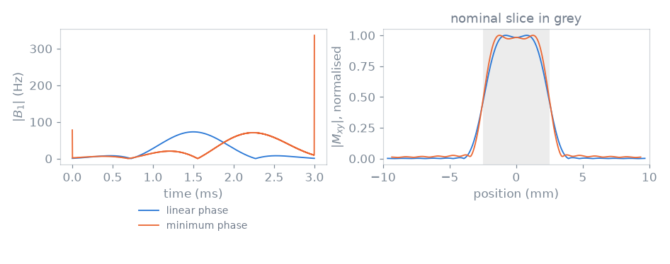
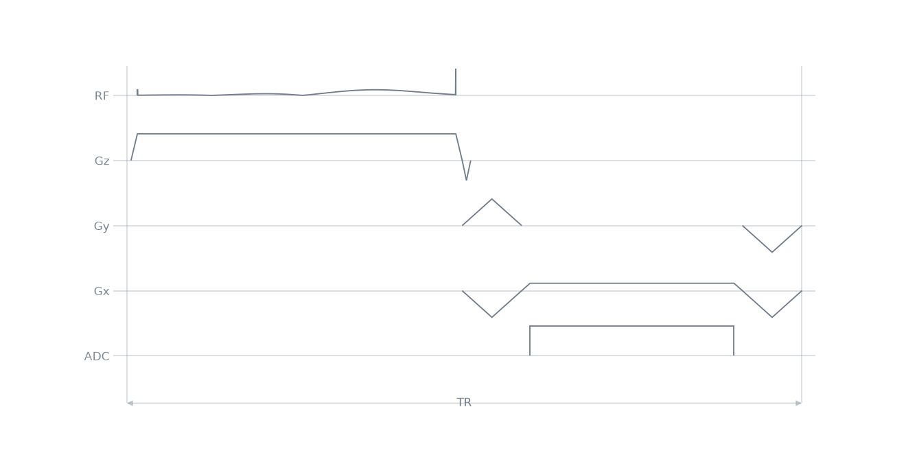

Note
Go to the end to download the full example code.
A minimum-phase excitation module#
The earlier lessons used the shipped modules. This lesson writes an
excitation module by subclassing RfModule, and
compares the design it implements with the shipped one.
The shipped excitation modules design linear-phase SLR pulses, whose energy is symmetric about the middle of the pulse. A minimum-phase design concentrates RF energy near the end of the waveform, so that at a fixed duration and time-bandwidth product the interval from the pulse to the echo is shorter. The peak \(B_1\) is larger, and the phase of the slice profile is not linear. The module concept, and the events a module publishes, are described in Sequence modules.
Learning objectives#
After this lesson, you should be able to:
subclass
RfModuleand implementinit_module;publish the pulse, selection gradient and rephaser of a module and set its timing reference
center;place the effective RF centre of a minimum-phase SLR pulse with
center_pos;compare the envelope, slice profile and peak \(B_1\) of linear-phase and minimum-phase designs;
measure the shortest echo time a readout module reaches with each excitation.
Module interface#
A module implements init_module: it assigns self.seq, adds the blocks
of its layout to it, and sets center,
the timing reference the rest of the sequence is placed against. Events
bound to local variables of init_module are published under those names,
so nothing is returned.
Subclassing RfModule rather than
SequenceModule adds
sim_rf(), which simulates the module’s
pulse against off-resonance.
center_pos places the effective RF centre, which sets both the rephasing area
make_slr_pulse() returns and the instant a readout module
measures its echo time from. A minimum-phase pulse is used at
center_pos=1.0, its own end.
import numpy as np
import pypulseqpp as pp
import pypulseqpp.sequences as design
class MinimumPhaseExcitation(design.RfModule):
"""Slice-selective excitation whose energy is concentrated at its end.
Parameters
----------
system : pypulseqpp.Opts
System limits.
flip_angle_deg : float
Nominal flip angle (degrees).
thickness_m : float
Slice thickness (m).
duration_s : float, optional
Pulse duration (s).
time_bw_product : float, optional
Time-bandwidth product of the SLR design.
center_pos : float, optional
Effective centre of the pulse, as a fraction of its duration.
axis : {'z', 'x', 'y'}, optional
Selection axis.
Attributes
----------
rf : RfEvent
The pulse.
gz : GradEvent
Its selection gradient.
gz_reph : GradEvent
The rephaser that unwinds the selection played after the effective
centre.
selection_amplitude : float
Selection gradient amplitude (Hz/m).
slice_thickness : float
Thickness the pulse and its selection gradient produce (m): the
pulse's measured bandwidth over the gradient amplitude.
"""
def init_module(
self,
system: pp.Opts,
flip_angle_deg: float,
thickness_m: float,
duration_s: float = 3e-3,
*,
time_bw_product: float = 4.0,
center_pos: float = 1.0,
axis: str = "z",
) -> None:
rf, gz, gz_reph = pp.make_slr_pulse(
np.deg2rad(flip_angle_deg),
duration=duration_s,
slice_thickness=thickness_m,
time_bw_product=time_bw_product,
filter_type="min",
center_pos=center_pos,
return_gz=True,
use="excitation",
system=system,
)
gz.channel = axis
gz_reph.channel = axis
self.seq = pp.Sequence(system)
self.seq.add_block(rf, gz)
self.seq.add_block(gz_reph)
self.center = float(rf.delay) + float(rf.center)
self.selection_amplitude = float(gz.amplitude)
self.slice_thickness = float(pp.calc_rf_bandwidth(rf) / abs(gz.amplitude))
Published events#
system = pp.Opts(
max_grad=40.0,
grad_unit="mT/m",
max_slew=150.0,
slew_unit="T/m/s",
rf_dead_time=100e-6,
rf_ringdown_time=30e-6,
adc_dead_time=10e-6,
)
FLIP_ANGLE_DEG = 20.0
THICKNESS_M = 5e-3
DURATION_S = 3e-3
minimum_phase = MinimumPhaseExcitation(system, FLIP_ANGLE_DEG, THICKNESS_M, DURATION_S)
linear_phase = design.SpatialSelectiveExcitation(
system, FLIP_ANGLE_DEG, THICKNESS_M, DURATION_S
)
print("events:", ", ".join(sorted(vars(minimum_phase.events))))
for name, module in (("linear", linear_phase), ("minimum", minimum_phase)):
print(
f"{name}-phase: center at {module.center * 1e3:.3f} ms of "
f"{module.duration * 1e3:.3f} ms, rephaser area "
f"{module.gz_reph.area:.1f} 1/m"
)
/home/runner/work/pypulseqpp/pypulseqpp/docs/build/site/pypulseqpp/_events.py:273: UserWarning: Specified RF delay 0.00 us is less than the dead time 100 us. Delay was increased to the dead time.
made = factory(*args, **kwargs)
events: gz, gz_reph, rf
linear-phase: center at 1.600 ms of 3.680 ms, rephaser area -408.0 1/m
minimum-phase: center at 3.100 ms of 3.240 ms, rephaser area -8.0 1/m
The rephaser compensates the slice-selection moment accumulated after the
effective RF centre. At center_pos=1.0 that moment is the fall ramp
alone, so the rephaser block has its minimum duration and the pulse ends a
gradient raster period or two before the encoding starts.
Pulse envelope and slice profile#
sim_rf simulates the pulse across off-resonance; dividing by the
selection amplitude reads the result as a position.
designs = {}
for name, module in (("linear phase", linear_phase), ("minimum phase", minimum_phase)):
_, mz_xy, frequency = module.sim_rf()[:3]
designs[name] = {
"time": module.rf.t,
"envelope": np.abs(module.rf.signal),
"position": frequency / module.selection_amplitude,
"profile": np.abs(mz_xy) / np.abs(mz_xy).max(),
}
print(
f"{name}: peak B1 {np.abs(module.rf.signal).max():.0f} Hz, "
f"slice {module.slice_thickness * 1e3:.2f} mm"
)

linear phase: peak B1 73 Hz, slice 4.83 mm
minimum phase: peak B1 336 Hz, slice 4.87 mm
Echo time#
A readout module takes the pulse, its selection gradient and its rephaser, and measures the echo time from the pulse’s effective centre. Applying the same readout to each excitation isolates the resulting difference in echo time.
readouts = {
name: design.LineReadout2D(
system,
module.rf,
module.gz,
module.gz_reph,
fov=(220e-3, 220e-3),
matrix=(192, 192),
te=None,
tr=None,
)
for name, module in (
("linear phase", linear_phase),
("minimum phase", minimum_phase),
)
}
for name, readout in readouts.items():
print(
f"{name}: shortest TE {readout.echo_time * 1e3:.3f} ms, "
f"repetition {readout.duration * 1e3:.3f} ms"
)
linear phase: shortest TE 3.160 ms, repetition 6.360 ms
minimum phase: shortest TE 1.660 ms, repetition 6.360 ms
One repetition of the short-TE design.
seq = pp.Sequence(system=system)
for block in readouts["minimum phase"].blocks:
seq.add_block(*block)
seq.paper_plot(tr=1)

Total running time of the script: (0 minutes 0.614 seconds)